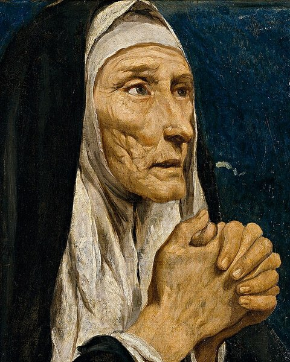

St. Augustine of Hippo
Doctor of the Church
For years he was bound by lust and ambition, praying for chastity “but not yet.” Set free by grace in a garden in Milan, he became Bishop of Hippo and a great teacher of grace.
9 days of prayer to break a bad habit
through the intercession of
St. Augustine of Hippo, St. Monica & St. Charles de Foucauld
“Create in me a clean heart, O God, and put a new and right spirit within me.”Psalm 51:10
Pause for a moment of silence before God, then make the Sign of the Cross.
In the name of the Father, and of the Son, and of the Holy Spirit. Amen.
Come, Holy Spirit, fill the hearts of Your faithful and kindle in them the fire of Your love.
Heavenly Father, You know the habit that holds us and how often we have tried and failed to break it. We come to You honestly, with divided hearts, trusting not in our own strength but in Your grace and mercy. Set us free, give us a clean heart, and make us new. Today we ask Mary, Refuge of Sinners; St. Augustine, whom You set free from the chains of sin; St. Monica, who prayed for years and never gave up; and St. Charles de Foucauld, who turned from a life of pleasure to live for God alone, to join their prayers with ours, through Christ our Lord. Amen.
I do not understand my own actions. For I do not do what I want, but I do the very thing I hate.
St. Paul admits what many of us feel but rarely say: “I do not do what I want, but I do the very thing I hate.” For us it may be lust, drinking too much, smoking, gambling, anger or hours lost to a screen. We have promised to stop, and we have started again. We begin these nine days by being honest with God about the habit, about how often we fall, and even about the part of us that still enjoys it. He already knows. Honesty is where His healing begins.
St. Augustine was this honest. Before his conversion, he wanted to be free of lust and yet dreaded losing it. He later confessed that as a young man he had prayed, “Grant me chastity and continence, but not yet” (Confessions 8.7). God did not turn away from that half-hearted prayer. He kept drawing Augustine until the “not yet” became “now.” Our divided hearts do not shock Him either.
Heavenly Father, You see our hearts as they are, and You love us still. We bring You the habit that holds us: how it began, how often we fall, and the part of us that does not yet want to let it go. We hide none of it from You. Through the prayers of St. Augustine, who prayed for chastity “but not yet,” give us honest hearts, and turn our half-wanting into a real desire to be free.
(Name your intention.) Amen.
Saved only on this device. Nobody else can see it.
Mary, Refuge of Sinners, pray for us.
 St. Augustine of Hippo, pray for us.
St. Augustine of Hippo, pray for us.
 St. Monica, pray for us.
St. Monica, pray for us.
 St. Charles de Foucauld, pray for us.
St. Charles de Foucauld, pray for us.
Lord Jesus, You came to set captives free. Break every chain that holds us, heal what sin has wounded, and clothe us with Your virtues, so that we may live in the freedom of the children of God. Amen.
Memorare
Remember, O most gracious Virgin Mary, that never was it known that anyone who fled to your protection, implored your help, or sought your intercession was left unaided. Inspired by this confidence, I fly unto you, O Virgin of virgins, my Mother. To you do I come; before you I stand, sinful and sorrowful. O Mother of the Word Incarnate, despise not my petitions, but in your mercy hear and answer me. Amen.
Our Father, who art in heaven, hallowed be thy name; thy kingdom come, thy will be done on earth as it is in heaven. Give us this day our daily bread, and forgive us our trespasses, as we forgive those who trespass against us; and lead us not into temptation, but deliver us from evil. Amen.
Hail Mary, full of grace, the Lord is with thee. Blessed art thou among women, and blessed is the fruit of thy womb, Jesus. Holy Mary, Mother of God, pray for us sinners, now and at the hour of our death. Amen.
Glory be to the Father, and to the Son, and to the Holy Spirit, as it was in the beginning, is now, and ever shall be, world without end. Amen.
Close with the Sign of the Cross.
Today’s step
Name the habit to God simply, aloud or on paper, and note when it usually happens, without dwelling on the details.
One person leads each part; all respond pray for us and Amen, and say the closing prayers together. The prayers say “we”; if you pray alone, say “I”.
If you can, go to Confession and attend Mass during these 9 days; no fall is too frequent to bring to Confession. Remove what feeds the habit (Day 5) and tell one trusted person (Day 8). If you are praying for someone else’s freedom, as St. Monica did for her son, name them at “Name your intention.” If you struggle with scruples, follow your confessor’s guidance; temptations and unwanted thoughts are not sins.
Grace often works through good help: there is no shame in also seeing a doctor or counselor, or joining a support group. If you drink heavily every day, or depend on drugs or medication, talk to a doctor before stopping, since sudden withdrawal can be dangerous. If you ever think of harming yourself, reach out right away to someone you trust or a crisis helpline.
Doctor of the Church
For years he was bound by lust and ambition, praying for chastity “but not yet.” Set free by grace in a garden in Milan, he became Bishop of Hippo and a great teacher of grace.

Patron of mothers & wives
Mother of St. Augustine. As a girl she slid, sip by sip, into a secret habit of drinking wine, then gave it up. For years she prayed with tears for her son’s conversion.
Hermit of the Sahara
French cavalry officer who lost his faith and lived for pleasure. Converted in Paris in 1886, he became a priest and a hermit among the Tuareg in the Sahara, where he was killed in 1916.
Each day’s theme and reading. Tap a day to pray it.
“For freedom Christ has set us free; stand fast therefore, and do not submit again to a yoke of slavery.”Galatians 5:1